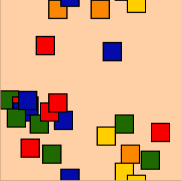

Projects

Animations with p5.js
A gallery of animations, created with the Processing library in Javascript.
Learn More

Animated Masks with p5.js
A gallery of animated masks, created with the Processing Library in Javascript. Additionally, a demonstration of
generative method techniques.